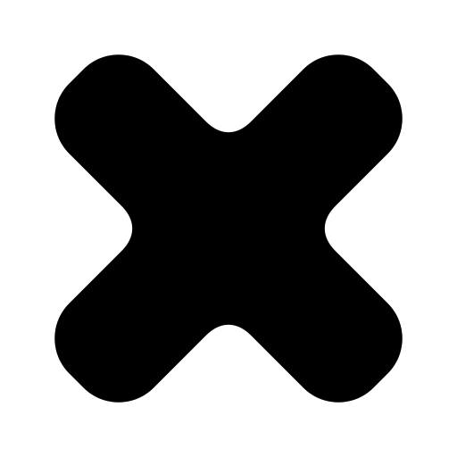
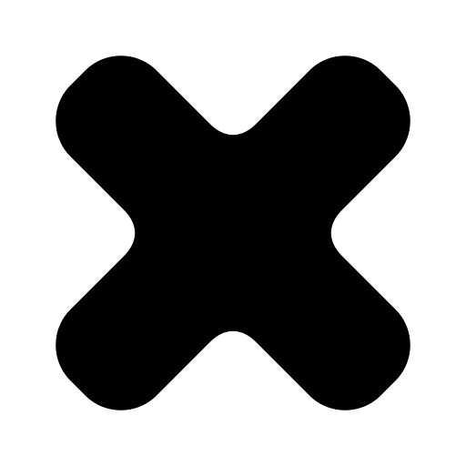

stagger

Three lightweight SVG spinners, plus a counter-spin experiment. Your chosen shape, clockwise-led motion, and 2.5-second timing (counter-spin is 20% faster). Reduced-motion preferences show the static mark.

A small outward swell with each turn, then back into alignment.
